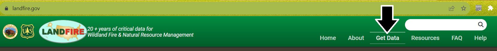
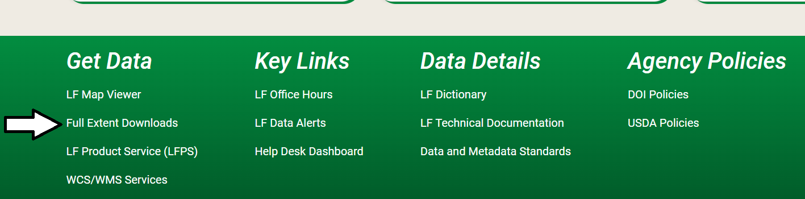

Get LANDFIRE Data: Download full extent rasters
What you will find in this section
What LANDFIRE mosaics are
Who should use LANDFIRE Full Extent mosaics
How to download the LANDFIRE mosaics
Helpful resources for downloading and using the LANDFIRE mosaics
Full Extent Mosaics
For users who want to assess larger landscapes (all of CONUS, the full US, or large regions encompassing multiple states or map zones), or users who frequently work in different landscapes around the US, we recommend downloading full extent mosaics. LANDFIRE delivers these as they are available for each product and each release. You can select which version, which theme (Disturbance, Fire Regime, Fuel, Reference, Topographic, Vegetation) and which region (CONUS, Alaska, Hawaii, Insular Areas). An additional benefit is that the files include attribute tables, which is not the case when using streaming services (see next section).
CONUS releases data for GeoAreas throughout the calendar year, so the latest version available may not include all of CONUS. See each specific version page here for more information.
Accessing the Downloads page
You can download the full extent mosaics from the Full Extent Downloads page on the LANDFIRE Program website. There are several ways to access this page.
💡 Screenshots are provided below the written instructions for those who find them useful
Click Get Data from the top navigation bar on the LANDFIRE Program website. This will take you directly to the data page where you can access data.
Click learn more under the data heading on the main page of the LANDFIRE Program website. This is found in the center of the three boxes near the bottom of the page. This will take you directly to the data page where you can access data.
You can arrive directly at the Full Extent Downloads page in several ways:
Scroll to the bottom of the main page of the LANDFIRE Program website and click Full Extent Downloads
From the data page you arrived at by clicking Get Data or Learn More following the processes in steps 1 or 2.
From the individual product pages
Screenshots for accessing the downloads page





Downloading Data
Not all datasets are available with every version. See the data page on the LANDFIRE Program Website to begin learning about versions.
Once you are on the Full Extent Downloads page, you will see three dropdown menus - one for version, one for Theme, and one for Region ID. These will help you limit your search so you can find the data you need more easily.
- For example, let’s search for LF 2022 Vegetation data for CONUS. To do so, we select Version: LF2022 - Theme: Vegetation, Region ID: CONUS, then hit apply. This narrows our search to only CONUS-wide vegetation projects from LANDFIRE 2022.
If you would like multiple versions, multiple regions, or multiple themes of data, simply leave that dropdown as -Any- and you will have the option to download whichever datasets you’d like. You cannot select multiple items from the dropdowns, and you will need to download each dataset individually..
From here, we can select from EVC, EVH, EVT, SClass, VCC, and VDep. BpS is not an option because BpS data were not created in LF 2022. To find the most recent versions of your dataset of interest, see the version comparison table on the LANDFIRE Program Website.
Find the dataset(s) you are interested in and click the Download link to the right of the dataset name. This will begin downloading a zip file. The zipped data will likely land in your Downloads directory unless you specified another location.
Extract the data to a useful location, then begin using LANDFIRE data in your projects and analyses.
Many of the full extent mosaics are very large files. The downloads will take several minutes. We recommend downloading them while connected to your best available internet connection and making sure you have several gigabytes of storage space available in your download location.
Screenshots for downloading data from the Full Extent Downloads page


Helpful Resources
LANDFIRE data alerts and notifications - where you can find out when new versions or datasets are available for download
Still have questions? LANDFIRE is here to help.
Ask the LANDFIRE Helpdesk (email link).
Search and subscribe to the LANDFIRE YouTube Channel (see tutorials, Office Hours, quick demonstrations).
Join an Office Hour (monthly meeting with open format Q & A with LANDFIRE experts).
Schedule a meeting (email link) with TNC’s LANDFIRE Team.